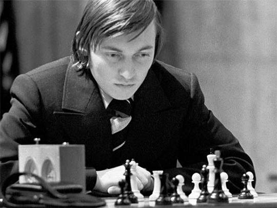
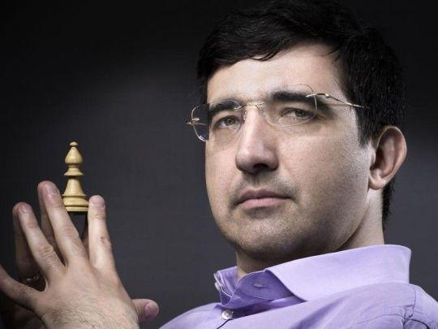
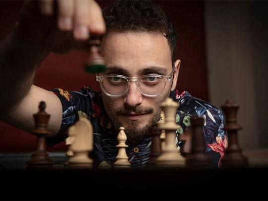
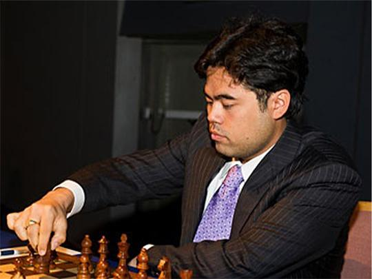
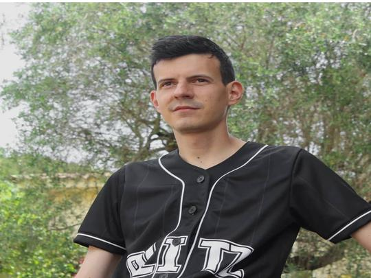

Né en 1963 à Bakou. Champion du monde à 22 ans en 1985 contre Karpov.
Style : ultra agressif, préparation d'ouverture monstrueuse. N°1 mondial pendant 20 ans.
Fait marquant : Premier humain à perdre contre un ordinateur Deep Blue en 1997.
Depuis, il milite pour "l'intelligence augmentée" : Homme + IA.
AURA-CHESS : Histoire des Échecs de Chaturanga à AlphaZero
Origines et Développement Initial
Les échecs naissent en Inde au VIe siècle sous le nom de Chaturanga,
"les 4 divisions de l'armée". Plateau 8x8, pièces = fantassins, cavaliers, éléphants, chariots.
Le but : capturer toutes les pièces, pas le roi.
En Perse, il devient Shatranj. Le "conseiller" et le "fou-éléphant" apparaissent.
Le jeu se diffuse dans le monde islamique pendant l'âge d'or. Les arabes écrivent les premiers traités de tactique.
Diffusion en Europe et Révolution
Xe siècle : Arrivée en Europe via l'Espagne mauresque. Au XVe siècle en Italie/Espagne,
grande révolution : la Reine devient la pièce la plus puissante. L'"éléphant" devient le "Fou".
Le jeu s'accélère. C'est la naissance des échecs modernes.
1886 : Premier championnat du monde officiel. Wilhelm Steinitz bat Johann Zukertort.
Naissance de l'ère compétitive.
Le XXe siècle : L'âge d'or Soviétique
Capablanca, Alekhine, Botvinnik, Tal, Spassky... L'URSS domine. 1972 : Fischer vs Spassky. Plus qu'une partie, un affrontement politique pendant la Guerre Froide.
L'impact de l'informatique
1997 : Deep Blue bat Kasparov. L'ordinateur gagne. 2017 : AlphaZero. L'IA de Google apprend seule en 4h et invente des concepts nouveaux. Aujourd'hui Stockfish et Leela tournent sur nos PC et analysent à 3500 Elo.
Le XXIe siècle : Démocratisation
Magnus Carlsen domine depuis 2013. Les plateformes Chess.com et Lichess ont 100M+ de joueurs. Le boom du streaming post-COVID avec "The Queen's Gambit" a rendu les échecs mainstream.
Légendes qui ont marqué l'échiquier
Des génies, des stratèges, des artistes. Ils ont repoussé les limites du calcul humain. De Capablanca "la machine" à Tal "le magicien de Riga", chaque champion a apporté sa pierre à la théorie.
Garry Kasparov

Magnus Carlsen

Né en 1990 en Norvège. GM à 13 ans. Champion du monde depuis 2013.
Style : "boas constrictor". Il serre, il serre, jusqu'à l'erreur. Génie des finales et du blitz.
Record : 2882 Elo, le plus haut de l'histoire. Il a popularisé les échecs via Play Magnus et Chess24.
Bobby Fischer

Né en 1943 à Chicago. GM à 15 ans. 1972 : Bat Spassky et brise 50 ans de domination soviétique.
Héritage : Obsession de la perfection. Il a révolutionné la préparation.
A inventé les "Echecs Fischer 960" pour lutter contre la théorie. Génie torturé.
Anatoly Karpov

Né en 1951. Champion du monde 1975-1985. Style positionnel, prophylaxie, "étouffe" ses adversaires.
Rivalité : 5 matchs contre Kasparov, 144 parties. L'une des plus grandes rivalités du sport.
José Raúl Capablanca

Né en 1888 à Cuba. Surnommé "la Machine à échecs". Champion du monde 1921-1927.
Génie : Jeu d'une simplicité déconcertante. Zéro erreur. Maître absolu des finales.
Vladimir Kramnik

Né en 1975. Champion du monde 2000-2007. A battu Kasparov 8.5 à 6.5 sans perdre une partie.
Contribution : A relancé la Défense Berlinoise. Expert en préparation assistée par ordi.
Judit Polgar

Née en 1976 en Hongrie. Plus jeune GM de l'histoire à 15 ans. A battu 11 champions du monde.
Impact : A prouvé que les femmes peuvent jouer au plus haut niveau. A refusé le circuit féminin.
Aujourd'hui les échecs explosent sur Twitch et YouTube. Analyse, pédagogie, divertissement. Le jeu devient un sport-spectacle accessible à tous.

GothamChess - Levy Rozman
5M+ abonnés YouTube. Pédagogue. Rend les concepts complexes drôles et simples.
Le prof d'échecs de la génération Z.

Hikaru Nakamura
Top 5 mondial + Streamer n°1. 2M sur Twitch. Roi du Bullet et du Blitz.
Charisme + niveau 2800 Elo. Redéfinit le joueur pro moderne.

Blitzstream - Kévin Bordi
La voix des échecs FR. Commentateur Chess.com. 2400 Elo.
A démocratisé les échecs en France pendant le COVID avec humour et pédagogie.